CS 194-26 Project 5: Auto Stitching Photo Mosaics
2020 Nov 26, cs194-26 (Kecheng Chen)
Part A
Shoot the Pictures
Target at Berkeley downtown
|

|
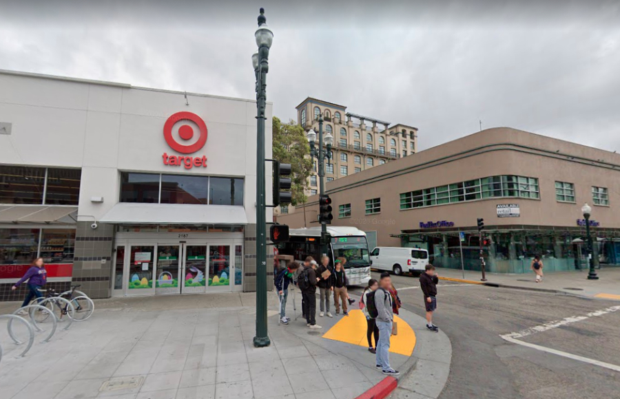
|
Recover Homographies
To calculate homography matrix, the below formulation is followed. The rightest column of V which corresponds to the smallest signular value is the solution.
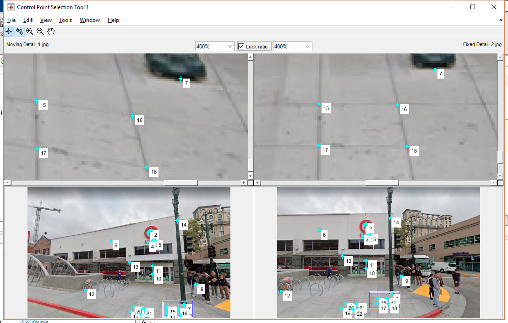
Control points selection
|
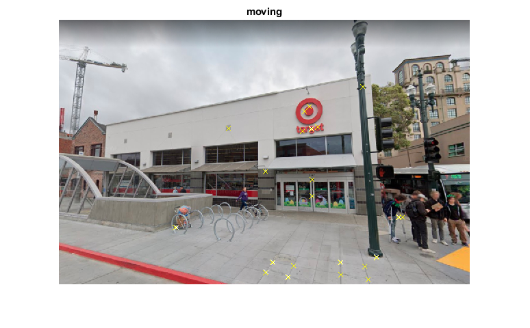
Normalized cross-correlation matching
|
Warp the Images
Image Rectification

|
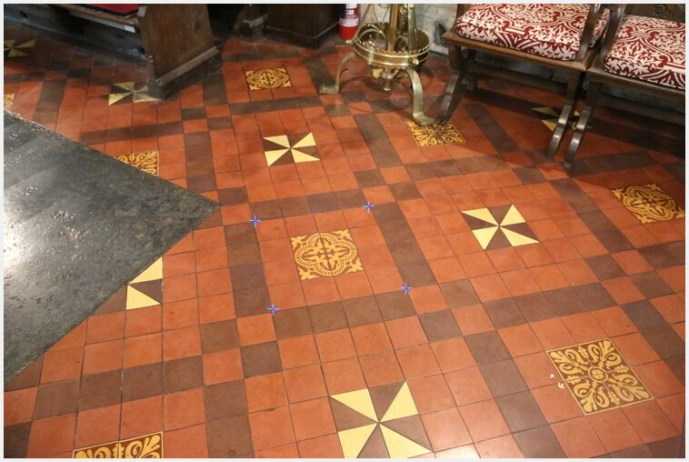
|
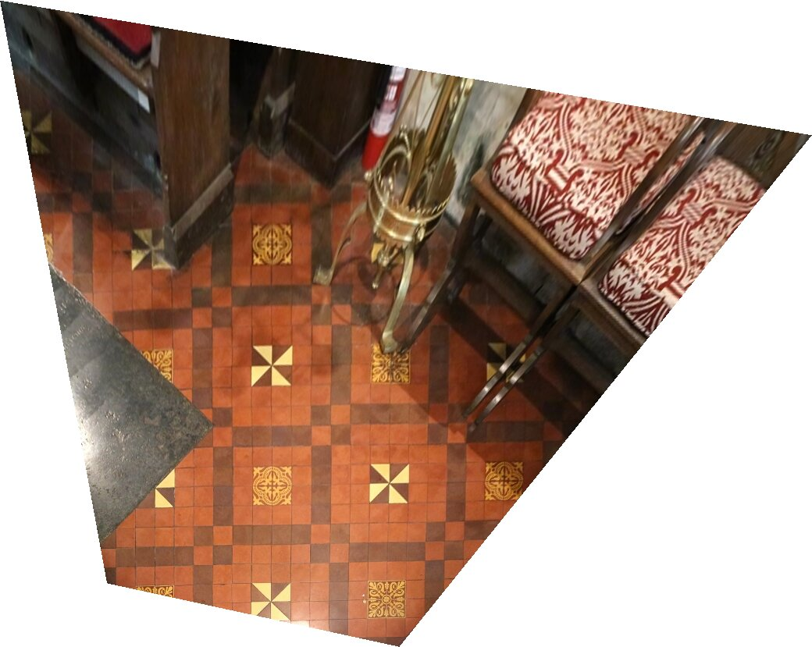
|
Blend the images into a mosaic
Laplacian pyramid is used to do the image blending.
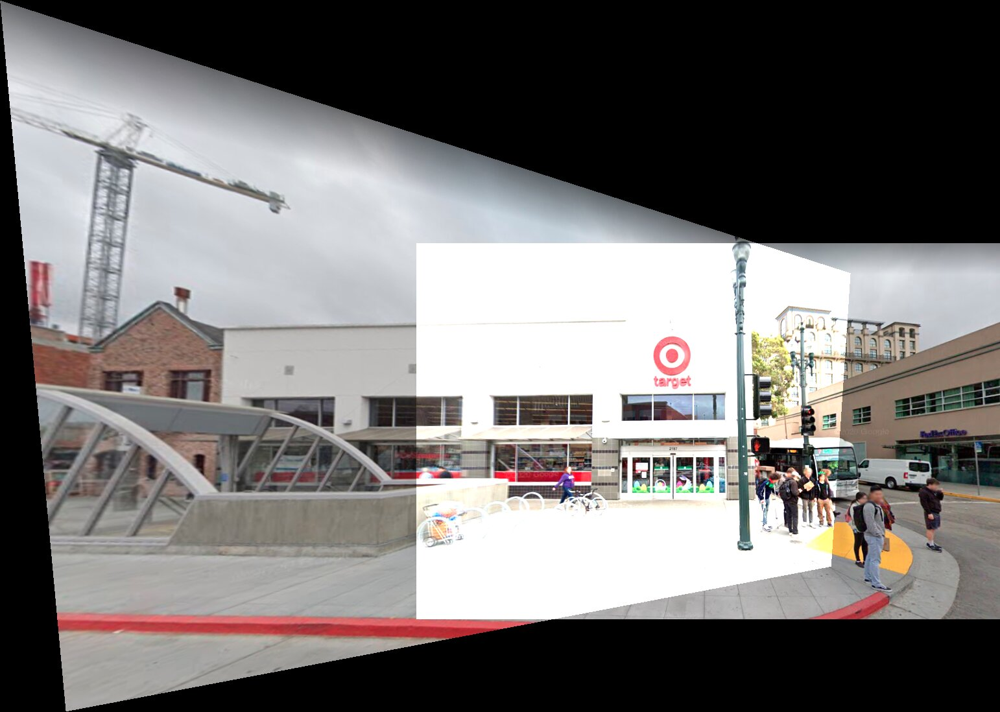
Naive addition
|
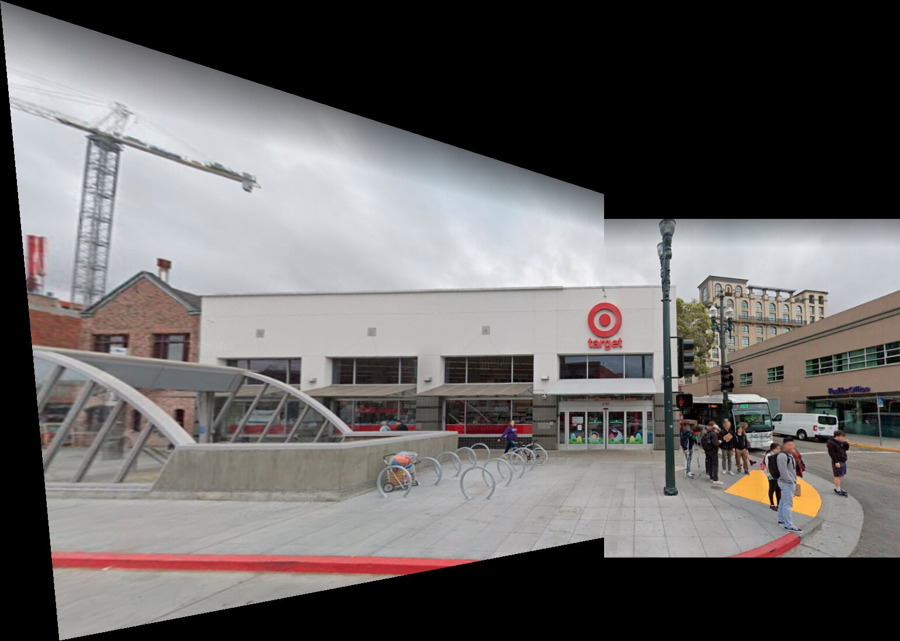
Naive blending
|
Two-level pyramid
|
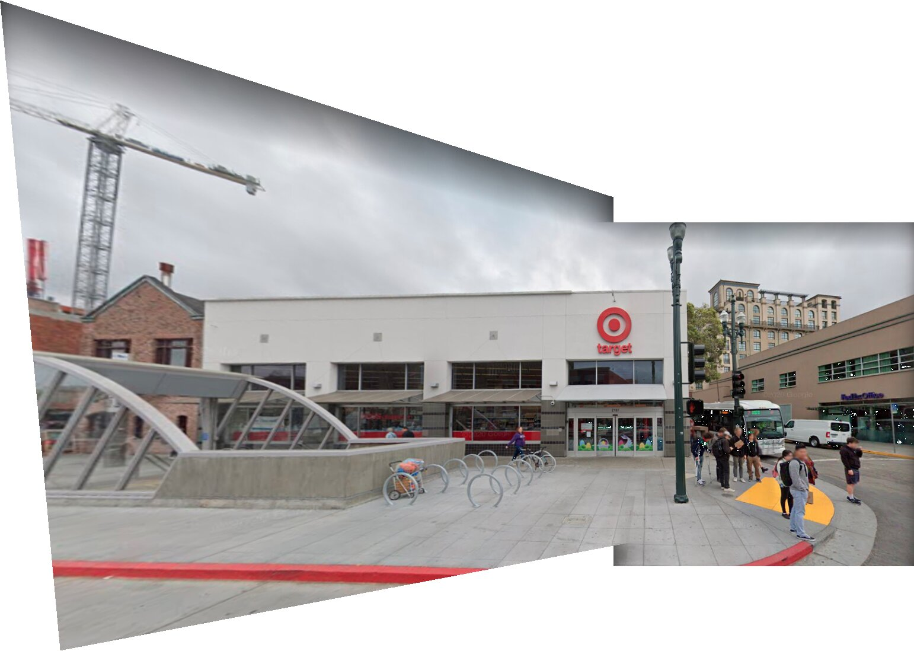
Five-level pyramid
|

|

|
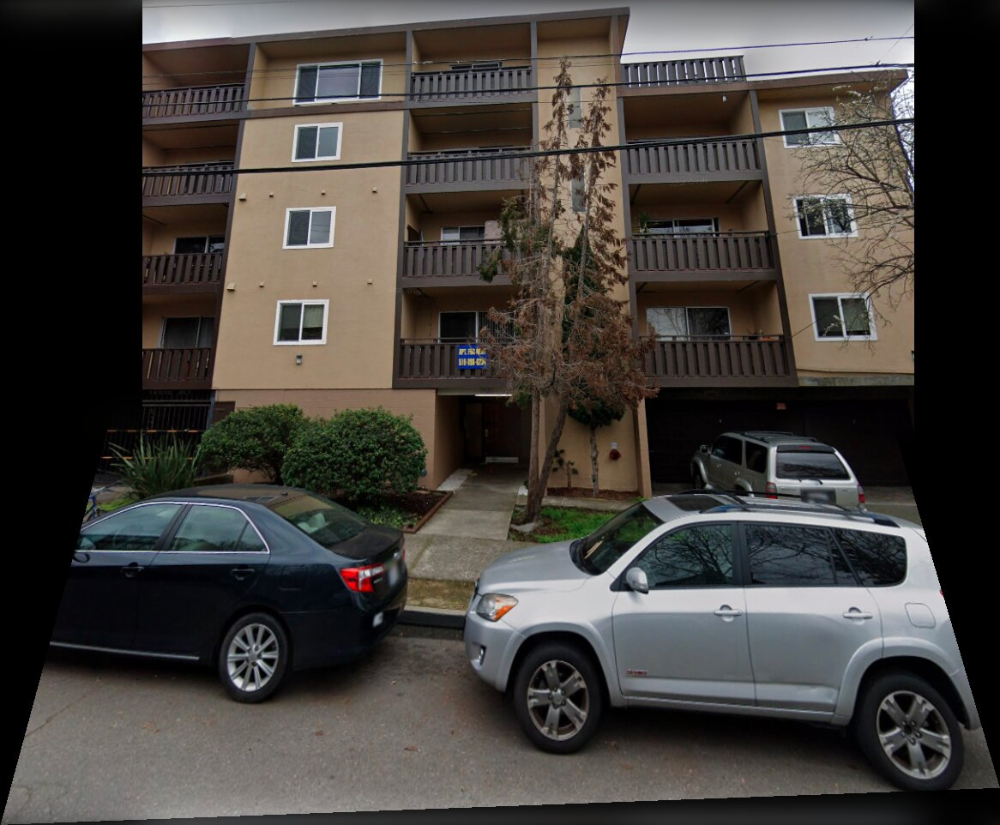
|
Tell us what you've learned
I learned that even without depth information, 2D scenary construction can also be done.
Reference:
https://cseweb.ucsd.edu/classes/wi07/cse252a/homography_estimation/homography_estimation.pdf
Part B
Detecting corner features in an image

|

|
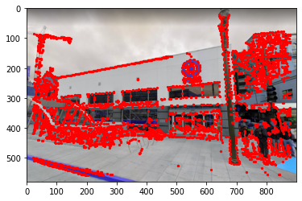
|

|
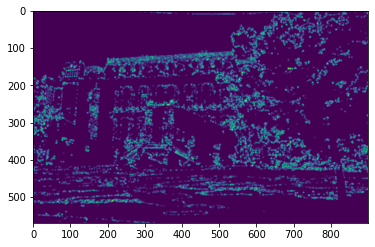
|
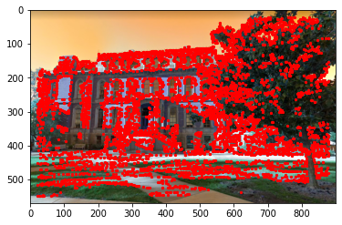
|

|
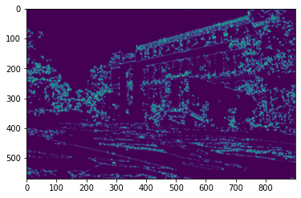
|
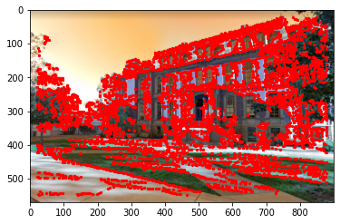
|
Adaptive Non-Maximal Suppression
Feature Descriptor extraction
Feature Matching
SSD(first nearest neighbourhood)/SSD(second nearest neighbourhood)<0.3
Directly stitch without RANSAC (not good)
RANSAC
What have you learned?
Automatic image stitching may perform better effect compared with the approach using manually selected feature points. It saves a lot of time. However, there are also some failure cases. When I applied this automatic method on the images with large angle interval, less than 4 pairs of feature points would be selected after feature matching. It is not enough for calculating H matrix. To deal with this situation, more advanced technology like deep learning can be tried. Also, there are some cases that feature points are wrongly matched.